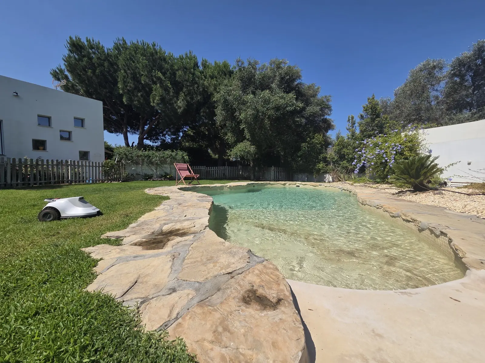
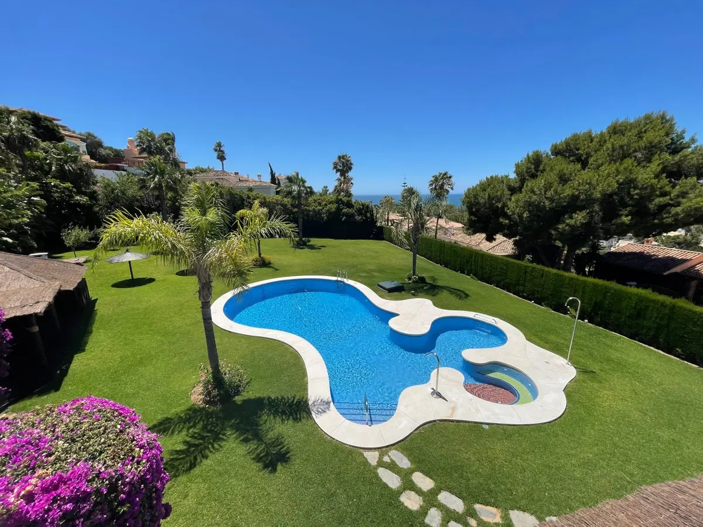

Casa de verano, césped de todo el año
Si tu chalet en Cádiz se usa en agosto y algún puente, el robot no lo sabe: un cortacésped automático que corta igual en marzo que en julio.
En Cádiz el césped crece casi todo el año; el robot lo corta cada día por una cuota anual desde 660 €/año* y nosotros nos encargamos de instalarlo, mantenerlo y cambiarlo si falla.
*Césped de hasta 600 m². Hasta 1.000 m², 760 €/año.

En Cádiz el césped apenas descansa: con la humedad y el invierno suave, crece casi los doce meses. Alquilar un robot cortacésped en Cádiz es dejar que lo corte él cada día por una cuota anual que lo cubre todo: robot, instalación, mantenimiento y averías. Y si tu casa es de verano, el robot sigue cortando aunque estés lejos.
Si tu chalet en Cádiz se usa en agosto y algún puente, el robot no lo sabe: un cortacésped automático que corta igual en marzo que en julio.
En la costa de Cádiz hay levante, arena y salitre. Antes de instalar vemos tu jardín y te decimos claro si el robot irá bien.
El alquiler de cortacésped en Cádiz cubre los doce meses, no solo la temporada: 660 €/año hasta 600 m² y 760 €/año hasta 1.000 m²*. Mismo precio que en cualquier zona [CONFIRMAR PEPO]. *Un pago al año por transferencia. IVA [CONFIRMAR PEPO]. Más de 1.000 m²: consúltanos [CONFIRMAR PEPO].
Cádiz es la provincia más alejada de la sede de IRM en Madrid, así que la instalación de robot cortacésped en Cádiz se organiza por viajes y con más antelación que en otras zonas [CONFIRMAR PEPO frecuencia de viaje, plazo y cómo se atienden las averías a esa distancia]. Ya tenemos clientes con robot cortando en Cádiz: al llamar te decimos la siguiente fecha prevista y la cerramos contigo.
Metros de césped, tipo de hierba, si está cerca de la playa y en qué municipio de Cádiz. Con eso te decimos la cuota y la fecha del siguiente viaje.
Vamos en la fecha acordada, vemos el terreno y dejamos un robot cortando de prueba. La demostración cuesta 175 €* y se descuenta de la cuota si contratas.
Base, zonas de corte, altura y app en tu móvil; el robot se queda cortando y pagas la cuota por transferencia. Lo sigues desde la app, estés donde estés.
Desde la llamada hasta tener el robot cortando en Cádiz: [CONFIRMAR PEPO] días. Asistencia ante avería: [CONFIRMAR PEPO]. *[CONFIRMAR PEPO cifra exacta y mecánica del descuento].
Sin cable enterrado no hay que abrir el césped. Y si la parcela baja hacia la playa o el campo, con cuesta también vale [CONFIRMAR PEPO pendiente máxima].
Vivienda y jardín. El jardín que buscamos en Cádiz es el de un chalet con césped en la costa o en la campiña: urbanizaciones de El Puerto de Santa María, Chiclana, Rota o Conil, muchas de segunda residencia; parcelas y casas de campo en Jerez y Arcos; y las zonas de chalet grande de Sotogrande y San Roque. Césped de 200 a 1.000 m², con riego, piscina y, cerca del mar, viento y arena de por medio.
Clima y meses de corte. El clima de Cádiz es atlántico y suave: inviernos con lluvia y sin heladas, veranos calurosos con levante. El césped crece casi todo el año y solo frena unas semanas en los meses más fríos; en muchos jardines hay grama, que para en invierno y vuelve fuerte en primavera. El robot corta de febrero a diciembre.
Lista orientativa [CONFIRMAR PEPO cobertura real antes de publicar].
¿Tu municipio de Cádiz no está? Dinos dónde y cuántos metros de césped y te contestamos si entra en el siguiente viaje.
Hay jardines de Cádiz con un robot de IRM cortando desde hace tiempo. Así lo cuenta uno de sus dueños.

"[Cita real · si es casa de verano, cómo se encontraba el césped al llegar antes y ahora, qué pasó cuando llamó a Pepo]"
— [NOMBRE], [MUNICIPIO], [m²], cliente desde [AÑO] · [PLACEHOLDER · CONFIRMAR PEPO cliente con permiso]
Sí [CONFIRMAR PEPO]. Jerez de la Frontera, El Puerto de Santa María y Chiclana concentran la mayoría de los chalets con césped de Cádiz y son los municipios a los que más vamos. Como las visitas se organizan por viajes, dinos tu municipio y los metros de césped y te decimos la siguiente fecha prevista. Si en tu urbanización hay más vecinos interesados, los agrupamos en la misma visita.
El compromiso de IRM es que, si el robot se para, en menos de 7 días esté reparado o sustituido [CONFIRMAR PEPO si el plazo es el mismo en Cádiz y cómo se atiende]. Lo primero es llamarnos: muchas paradas se resuelven desde la app. Si hay que ir, vamos. Si tu casa es de verano y no estás, coordinamos contigo el acceso al jardín [CONFIRMAR PEPO]. La avería y el robot de sustitución van dentro de la cuota.
Sí [CONFIRMAR PEPO]. Las urbanizaciones de Sotogrande y San Roque son parcelas grandes, con césped bien cuidado y riego, y quedan dentro de la cobertura de Cádiz. El renting cubre césped de hasta 1.000 m²: si tu parcela tiene más, cuéntanoslo y vemos la forma [CONFIRMAR PEPO más de 1.000 m²]. Si la urbanización tiene normas sobre horarios de jardinería, el robot ayuda: no hace ruido y puede cortar a la hora que marque la comunidad.
Sí: 660 €/año hasta 600 m² y 760 €/año hasta 1.000 m², la misma cuota que en cualquier zona donde instalamos un robot cortacésped en alquiler [CONFIRMAR PEPO suplemento por desplazamiento a Cádiz, la provincia más alejada]. Incluye robot, instalación sin cable, app, mantenimiento y averías. Que en Cádiz el robot corte más meses no cambia el precio: el renting va por metros de césped.
No, y en Cádiz es la pregunta que más nos hacen. El robot cortacésped trabaja solo en tu jardín: sale de la base, corta, vuelve y se carga, cada día, sin nadie delante. Tú lo ves desde la app. La distancia solo cuenta el día de la instalación y si hay una avería que no se resuelve por teléfono; para eso está el compromiso de los 7 días [CONFIRMAR PEPO cómo se cumple].
Depende de cuándo sea el siguiente viaje a Cádiz [CONFIRMAR PEPO]. Al llamar te decimos la fecha prevista y la cerramos; ese día hacemos demostración e instalación en la misma visita si el jardín es apto. Si tu casa es de verano, lo mejor es reservar antes de la temporada para encontrarte el césped hecho al llegar. Si solo puedes estar en agosto, dínoslo y buscamos una fecha en la que estés.
Es el caso más habitual en la costa de Cádiz y es donde el robot más se nota. Corta cada día aunque la casa esté vacía, lo ves desde la app desde donde estés y, si algo falla, nos llamas. Para las revisiones o una avería sin que estés, acordamos contigo cómo entrar al jardín [CONFIRMAR PEPO]. Llegas en verano y el césped está igual que el día que te fuiste.
En muchos jardines de Cádiz el césped es grama, que crece con fuerza en verano y frena en invierno; el robot la corta igual. Con el levante y la arena cerca de la playa, lo que hacemos es verlo en la demostración: miramos cómo está el césped, si hay arena suelta sobre él y dónde conviene poner la base, y te decimos claro si tu jardín es apto antes de que pagues nada de la cuota anual.